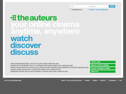
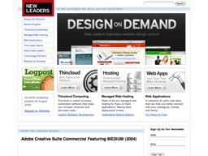

How we work?
Software is alive
- it's not a static artefact, so it can't be described by a static spec or plan
- it needs to grow and evolve according to its environment, to best suit the needs of its users. These needs change over time, even as the software is being built.
- the best way to do this is to get feedback as soon as possible, and at every stage thereafter
Come to us early with your idea
or; "we prefer great ideas over detailed spec document"
"the message of the XP and Agile community was once 'professional programming is about the programmers and customers stupid' was what gave the movement teeth, and ever since then, the community has been trying to soften that blow"; By connecting developers (us) to clients (them) directly, we are better placed to really be agile than agencies with consultants and analysts, etc.
Don't start building a spec for your product before coming to us, we don't do 'BDUF'.
We work with you to make your idea a success, so don't be afraid to get in touch.
We only develop using agile
What we mean by agile
Blah Blah
Why we only use agile
why we think it's the best option for the customer
An example of how it might work
should communicate:
- breaking down features into stories
- building the simplest thing that could work
- evaluating
- deploying often
- their role in the developing the story
- prioritising
Read more at the agile manifesto website
Always a product
We always develop a product that can be released at every iteration. So you can always keep improving your product - well something along this lines
Delivering working software gives visibility of our progress
By starting with something simple and iterating towards the best solution is very powerful as you gain many advantages:
- This means that you'll be getting working software at least every week
- You'll be able to work with us flexibly, deciding when to start, stop and pause on work you want us to do
- You keep your options open and don't have to spend your money before you have to
- Further development based on feedback from someone actually using working software is so much more valuable than someone pontificating in abstract terms
We are a team of great developers
- fairly well known individuals, often with existing reputations and/or open-source kudos
- the first UK development supergroup?
- also, we work together well; complementary skills?
You probably don't need a Facebook
- improve existing systems and processes iteratively, rather than pitching new bespoke behemoths
- we don't want to oversell you something that isn't actually what you need
- our aim is to deliver tangible value as quickly as possible
- sometimes all you might need is something really simple, or a simple tweak to an existing process
Collaboration
- We expect to work in partnership towards a shared goal.
- We will challenge you and expect you to challenge us
Quality & Sustainability
- Even though we deliver working software at frequent intervals, we don't compromise on quality.
- his keeps the cost of change down and means we don't have to slow down.
Trust us
- ....
Portfolio
TheAuteurs.com
TheAuteurs.com is an 'ongoing, online film festival', where you can watch choice films from around the world, and interact with other cineophiles to get great recommendations about what you should be watching. It's a great site which we use daily.
Free Range is collaborating with The Auteurs to bring new features to their community. As a significant and established application, we're also working to ensure that they can continue to rapidly develop their site without compromising on code quality.
New Leaders
We've worked together with New Leaders in California to build a number of web applications for their clients, from event management to weight loss tools.
We've also helped them improve their development process by sharing our architecture and testing expertise.
Open source projects
Members of Free Range are also typically the authors of many open source projects. Here's a sample of a few of them.
- The engines plugin
- Vanilla.rb
- Gitnode
- FreeAgent Widget
- Stikkit Widget
- ActivePlaces Reloaded
The Team
-
James Adam
James is a long-time Rubyist and one of the instigators of LRUG and Ruby Manor. Since finishing his PhD, he’s been building applications using Ruby and Rails, including work on theauteurs.com and Reevoo. James wrote the book on Rails plugins, and maintains a whole bunch of open source libraries, including Vanilla.rb, soup and the engines plugin for Rails.
-
James Andrews
-
Jason Cale
-
James Mead
Since spending a couple of years as an electronic engineer on an Antarctic research station (yes, it was cold; no, there weren’t any polar bears), James has spent the last 15 years developing software at a number of consultancies and startups in the UK and US. After a stint at Thoughtworks working for clients like Dixons, AOL & Fidelity, he was the first employee at Reevoo, an early adopter of Ruby on Rails.
Since going freelance earlier this year, he’s helped Headshift develop the website for Antony Gormley’s One & Other project. He’s the author of Mocha, a popular Ruby testing framework.
-
Luke Redpath
Luke has been writing web apps for almost ten years and in late 2008, he released his first iPhone application, Squeemote. Before this, he worked at Reevoo as part of one of the best Rails development teams in the country.
He's a big fan of both writing and contributing to open-source software, including Rails, RSpec and more recently, Gemcutter. His own open-source libraries include Clickatell, a library for interfacing with the Clickatell SMS gateway and SimpleConfig, a declarative application configuration Rails plugin which was developed whilst working at Reevoo.
-
Kalvir Sandhu
Kalv started building applications almost ten years ago. After gaining a Computer Science Degrees from Southampton Uni he has worked with Java, Perl and PHP but for the last 2 years only used Ruby. Some of the things he's worked on would be JGP a large public sector recruitment site, Hophive a hyperlocal content aggregator startup and recently twitterfeed by rebuilding the processing of 600k+ rss feeds to twitter in Ruby.
He spends most of this time working with technology startups, changing the way local government use technology or pushing projects that aim to open up the government data.
-
Tom Ward
Tom is a software developer passionate about building and improving the web. Though his background is in J2EE, he has embraced Ruby On Rails as a platform and become a respected contributor.
You can see some of the code he's written on github.


Contact Us
Call us on +447973428644
First Floor, 163 Seymour Place, London W1H 4PL
Company Number 06789592